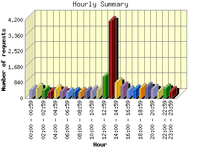
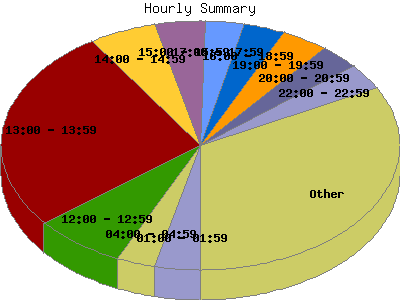

Report generated by Analog 6.0 and Report Magic 2.21
|
Web Server Statistics for "Harish Narayanan (hnarayan) - October 2005" Report generated by Analog 6.0 and Report Magic 2.21 |
The Hourly Summary identifies the level of activity broken down by each hour. Remember that one page hit can result in several server requests as the images for each page are loaded. This summary also compares the level of activity during working hours and after hours as a total for the report time frame.


| Hour | Number of requests | Number of bytes transferred | Percentage of the bytes | Percentage of the requests | |
|---|---|---|---|---|---|
| 1. | 00:00 - 00:59 | 464 | 20.904 MB | 4.19% | 2.98% |
| 2. | 01:00 - 01:59 | 568 | 31.200 MB | 6.25% | 3.65% |
| 3. | 02:00 - 02:59 | 436 | 27.170 MB | 5.44% | 2.80% |
| 4. | 03:00 - 03:59 | 343 | 20.694 MB | 4.14% | 2.20% |
| 5. | 04:00 - 04:59 | 485 | 31.403 MB | 6.29% | 3.12% |
| 6. | 05:00 - 05:59 | 384 | 24.589 MB | 4.92% | 2.47% |
| 7. | 06:00 - 06:59 | 321 | 7.930 MB | 1.59% | 2.06% |
| 8. | 07:00 - 07:59 | 341 | 21.041 MB | 4.21% | 2.19% |
| 9. | 08:00 - 08:59 | 337 | 9.003 MB | 1.80% | 2.16% |
| 10. | 09:00 - 09:59 | 375 | 17.997 MB | 3.60% | 2.41% |
| 11. | 10:00 - 10:59 | 418 | 14.257 MB | 2.85% | 2.69% |
| 12. | 11:00 - 11:59 | 464 | 12.723 MB | 2.55% | 2.98% |
| 13. | 12:00 - 12:59 | 1,165 | 26.379 MB | 5.28% | 7.48% |
| 14. | 13:00 - 13:59 | 4,140 | 22.006 MB | 4.41% | 26.59% |
| 15. | 14:00 - 14:59 | 859 | 23.582 MB | 4.72% | 5.52% |
| 16. | 15:00 - 15:59 | 640 | 16.721 MB | 3.35% | 4.11% |
| 17. | 16:00 - 16:59 | 427 | 14.351 MB | 2.87% | 2.74% |
| 18. | 17:00 - 17:59 | 485 | 19.362 MB | 3.88% | 3.12% |
| 19. | 18:00 - 18:59 | 524 | 12.436 MB | 2.49% | 3.37% |
| 20. | 19:00 - 19:59 | 600 | 18.412 MB | 3.69% | 3.85% |
| 21. | 20:00 - 20:59 | 503 | 40.386 MB | 8.09% | 3.23% |
| 22. | 21:00 - 21:59 | 375 | 26.575 MB | 5.32% | 2.41% |
| 23. | 22:00 - 22:59 | 520 | 24.239 MB | 4.86% | 3.34% |
| 24. | 23:00 - 23:59 | 396 | 15.942 MB | 3.19% | 2.54% |
| Work Hours (8:00am-4:59pm) | 8,825 | 157.019 MB | 31.45% | 56.68% | |
| After Hours (5:00pm-7:59am) | 6,745 | 342.285 MB | 68.55% | 43.32% | |
This report was generated on November 4, 2005 18:28.
Report time frame October 1, 2005 00:05 to October 31, 2005 23:57.
| Web statistics report produced by: | |
 Analog 6.0 Analog 6.0 |  Report Magic 2.21 Report Magic 2.21 |